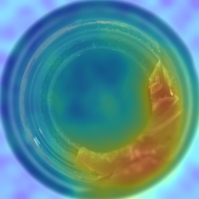
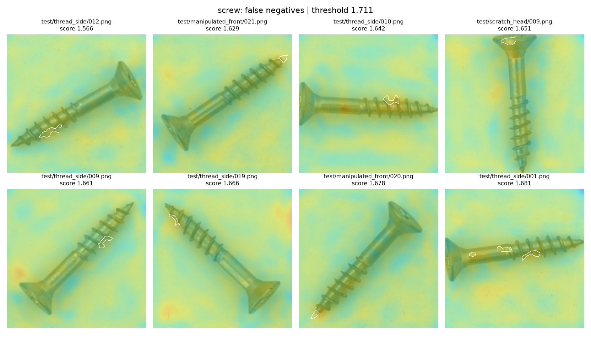
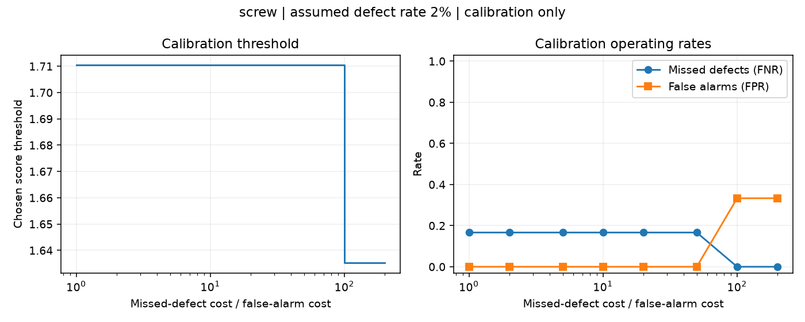

Start with one chapter. Follow the picture, then open a detail only when you need it. Your last chapter is remembered in this browser.
The 30-second version
Remember what normal looks like. Flag patches that look unfamiliar.
This is an inspection system for bottles, screws and carpet. It learns from good examples, then points to unusual parts of a new image.
Good photographsOnly normal images enter training.
→
Frozen feature extractorTurn local image patterns into lists of numbers.
→
A small memory bankKeep representative normal patch descriptors.
A new photographUse exactly the same preprocessing.
→
Compare its patchesHow far is each from the nearest remembered normal patch?
→
Score + heatmapA threshold decides whether to flag the image.
One sentence to remember: “Training” builds a reference bank; inspection measures distance from that reference.
Why this method, instead of training a classifier?
The training data contains good products, not a representative collection of every future defect. A supervised classifier would need defect labels. This project uses a PatchCore-style embedding method with a pretrained, frozen backbone.
PaDiM is another valid normal-only embedding method; it fits per-position distributions rather than keeping a representative feature bank. An autoencoder would add reconstruction training and the risk of reconstructing defects well. These are tradeoffs, not a measured claim that one method always wins.
What is finished, and what is not proven?
The model, evaluation, cost threshold, API/frontend, tests, CI definition, drift check and documentation are implemented. Real images and API uploads have been tested locally. Docker build/run and remote GitHub Actions have not been verified. This is a portfolio baseline, not a production-ready inspection system.
data.py · configs/default.yaml
Make every image comparable.
Original RGB photoDifferent source resolutions.
→
Resize to 256 × 256A fixed computational size.
→
Crop to 224 × 224Centre region used by the model.
224 × 224 retained regionStriped border is discarded
Then normalise the channels
Convert pixels to a tensor, scale into 0–1, then use the ImageNet mean and standard deviation. Those are the input conventions of the frozen backbone.
1 × 3 × 224 × 224
batch × colour channels × height × width
A defect outside the crop can disappear. The system cannot inspect pixels it never receives.
Why do the mask and display image need separate transforms?
Both need the same geometry. The mask uses nearest-neighbour resizing to stay binary. The display image stays in ordinary RGB for the overlay. Only the network input gets ImageNet normalisation.
Why no augmentation? Why not preserve the whole frame?
No augmentation makes a simple deterministic baseline. Realistic rotations or lighting changes might improve normal coverage; that requires an experiment. Full-frame resizing or tiling could preserve borders, at the cost of changed geometry or more computation. The inherited crop is retained and its limitation is reported.
How does the data loader prevent accidental leakage?
It reads only train/good for model fitting and rejects anomalous training labels. Test masks are loaded for evaluation, never used to build the bank. Paths are sorted so order is reproducible. A missing mask fails loudly.
features.py
Turn visual patterns into descriptors.
A descriptor is a list of numbers. Similar visual patterns should produce nearby lists, even when “similar” is hard to express with raw pixels.
Layer 2 · local structure
512 × 28 × 28
More spatial detail.
Layer 3 · wider context
1,024 × 14 × 14
Upsampled to align with layer 2.
3 × 3 average poolingSummarise nearby activations.
→
Align and concatenate512 + 1,024 = 1,536 numbers per patch.
→
784 descriptors28 × 28 patch locations per image.
A 28 × 28 feature grid is not 784 disjoint little photographs. Each feature has a receptive field that can overlap neighbouring locations.
What exactly is frozen?
WideResNet50-2's ImageNet weights are not updated. Gradients are disabled, and eval() freezes BatchNorm behaviour so another image in the batch does not redefine the current image's features.
Why these layers? Why this backbone?
Layer 2 keeps useful resolution; layer 3 adds context. Much deeper features have coarser maps; earlier features can still help fine textures. WideResNet50-2 is a conventional PatchCore baseline. ResNet18 may be cheaper, but the accuracy/latency comparison has not been measured here.
How is this implemented?
Forward hooks capture the selected layer outputs. Average-pool each, bilinearly upsample the deeper map, then concatenate along channels. flatten_patches permutes the tensor to place each descriptor in its own row. The current implementation still computes the later backbone layers; truncating it could save time.
coreset.py · PatchCore.fit
Keep coverage, reduce the bank.
209 normal bottles784 descriptors from each.
→
163,856 candidatesAbout 1.01 GB of feature values.
→
1,639 retainedAbout 10.07 MB of feature values.
The greedy selection loop
Project descriptors to 128 dimensions to make selection cheaper.
Start with the point furthest from the centre.
Find the candidate furthest from its nearest retained point.
Keep it, update distances, and repeat until about 1% remain.
The projection chooses which rows to keep. The saved bank contains their original 1,536-dimensional descriptors.
Why not choose random rows?
Random sampling is cheaper and tends to represent common patterns. Coverage-based selection deliberately seeks poorly covered patterns, including rare but normal ones. Neither guarantees better defect detection in every dataset. The downstream accuracy cost of this 1% bank versus a full bank has not been measured.
What was fixed during the continuation?
Identical descriptors could make the selection loop choose the same row repeatedly. Selected rows are now excluded from future choices. The count now follows the documented ceiling rule: ceil(N × ratio). The banks were rebuilt and the behaviour is covered by tests.
Does the entire model fit in 10 MB?
No. That is only the bottle bank's float32 values. The backbone, intermediate activations, pairwise distances and monitoring reference also take memory. Training temporarily stores the full candidate bank.
patchcore.py · viz.py
Distance becomes a score and a map.
New patch descriptorA point in feature space.
→
Nearest normal patchEuclidean distance measures unfamiliarity.
→
One distance per locationA 28 × 28 grid.
Image decision
Take the most unusual patch, reweight it using the matching bank entry's neighbourhood, and compare the image score with the calibrated threshold.
score ≥ threshold → flag
Taking a mean over all patches could hide a small defect.

Real holdout example. Upsample the patch map, smooth it, and blend it onto the matching centre crop.
A score is not a probability. A coloured region is not a confirmed defect or a pixel-level binary decision.
Why the neighbour reweighting?
The nearest match alone may be weak evidence of normality. The score uses distances from the unusual patch to the matched bank entry's neighbours. The stable computation is 1 − softmax(distances)[0] times the largest patch distance. Self is forced to the first neighbour slot to avoid floating-point and tie-ordering mistakes.
Why fixed colour bounds?
If every image stretches its own smallest value to blue and largest to red, even a normal image looks alarming. Evaluation and serving share per-category bounds derived from calibration images. The standalone scoring CLI still defaults to relative colouring; its heatmap is not directly comparable across images.
evaluation.py · scripts/evaluate.py
Separate choosing from judging.
Normal training imagesBuild the bank only.
30% labelled calibrationChoose the operating threshold.
70% untouched evaluationMeasure performance at that threshold.
The 30/70 split is fixed by seed and made within each defect type. These are our holdout results, not official full-test benchmark numbers.
Category
Image AUROC
Pixel AUROC
AP
Misses / defects
False alarms / good
Bottle ranks images perfectly on this holdout, yet misses some defects at the threshold selected from calibration. Good ranking and a good operating threshold are different achievements.

Screw false negatives: these real defective images fell below the chosen threshold. White outlines show labelled defects.AUROC, AP, PR-AUC, confusion matrix — which answers what?
Image AUROC asks whether defective images rank above normal ones. Pixel AUROC asks the same at pixel level. AP summarises precision weighted by recall gains; trapezoidal PR-AUC is a separate convention also saved in the metrics. The confusion matrix counts actual mistakes at one operating threshold.
The matrix is [[true negatives, false positives], [false negatives, true positives]]. AP is high on this defect-heavy benchmark partly because defects are common. The report separately estimates a configured 2% scenario by reweighting classes.
Where are the actual numbers and images?
results/metrics.json contains the report. Each category directory contains predictions.json with image paths, split membership and scores, compressed holdout pixel arrays, the PR plot, cost plot and error grids. A compact reference run is saved in measured_run.json.
threshold.py · real calibration scores
The threshold is a cost decision.
Explore what the calibration data recommends when a missed defect becomes more expensive. This changes the explanation only; it does not modify your service or reuse evaluation labels.
—selected score threshold
—estimated misses per 10,000
—estimated false alarms per 10,000
Missed-defect rate (FNR)
False-alarm rate (FPR)
Cost = relative missed-defect cost × defect rate × FNR + normal rate × FPR. Estimates assume the calibration score distributions transfer to deployment.
Why does the slider sometimes leave the threshold unchanged?
There are only finitely many distinct score cutoffs. The same cutoff can be cheapest over a wide range of costs. Bottle's calibration examples separate perfectly, so one threshold has zero calibration cost across this sweep. The holdout misses prove that this is not a guarantee about future products.
Why not maximise F1 or set a threshold of 0.5?
F1 does not encode the business cost ratio or deployment prevalence. These raw scores are distances, so 0.5 has no probability interpretation. The optimiser evaluates every distinct calibration cutoff, including flag-all and flag-none, with an explicit tie rule favouring the higher threshold.

Saved experiment: screw, 2% assumed defect rate. This plot is reproduced by the evaluation command.
api.py · frontend.html · monitoring.py
Make the experiment usable.
Upload an imagePOST /predict, multipart field “file”.
→
Validate and scoreSame preprocessing, bank and calibrated threshold.
→
Return an inspectionScore, decision, overlay, latency, drift status.
make serve
# Open http://127.0.0.1:8000
# Configured category defaults to bottle.
A separate question: has the input changed?
Training referenceOne mean feature vector per normal image, up to 256 images.
Statistical comparisonKS tests with a correction across projections; log a warning.
A drift warning asks for investigation. It does not identify the cause, measure current accuracy, or retrain automatically.
What prevents silently serving the wrong threshold?
The service checks the artifact hash, score settings, category, cost ratio and base rate against the threshold record at startup. It refuses mismatches. Missing monitoring references require rebuilding old artifacts. The healthcheck reports ready only after loading and warmup.
Why a lock and one worker?
The feature extractor uses mutable forward-hook state and the drift monitor keeps a window. A lock protects them from concurrent requests. It also serializes inference; this is not a high-throughput deployment. Multiple workers have separate models and separate monitoring windows.
Why image summaries instead of testing every patch?
Patches from one image are correlated. Treating them as independent observations would overstate statistical evidence. Image means are simpler, but can hide local shifts. Eight projections cannot detect every distribution change; repeated monitoring also produces occasional false alarms.
Your return point
Know where to go next.
You can use this page as a map rather than memorising every function.
Resume note — current state, commands, remaining caveats.
For doing
make test # fast offline tests
make integration # real-data checks
make serve # open the demo
make evaluate # regenerate results
make reproduce # full pipeline
The full pipeline retrains local artifacts. After changing model settings, train and evaluate again before serving.
Explain the project in an interview
“I implemented a PatchCore-style detector using frozen ImageNet features and a coreset of normal patches. I separated threshold calibration from holdout evaluation, optimised the threshold for explicit error costs and prevalence, then served the result through FastAPI. I tested the core logic without a dataset and checked real images separately. I also added a small feature-distribution drift warning.”
Then discuss a real failure: bottle's ranking is perfect on this small split but its calibrated threshold misses defects; screw's small defects remain difficult. Avoid claiming paper-level parity or production readiness.
Questions to check your understanding
What does “training” change, and what stays frozen?
Why must serving use the same preprocessing?
Why can a border defect be missed?
What does one descriptor represent?
Why choose a coreset, and what is still unmeasured?
Why can AUROC be perfect while recall is imperfect?
Why does a 2% defect rate change precision?
Which data chooses the threshold?
What does a drift warning establish — and what doesn't it?
Which parts have been tested locally, and which still need target-environment checks?
Remaining work before a real deployment
Run Docker and remote CI; gather independent calibration images and cost estimates; quantify uncertainty; address cropped borders; test camera changes and concurrency; add request limits and access control if exposed publicly. Coreset and backbone ablations are future experiments, not evidence already collected.
A useful next session is small: choose one missed screw image and follow it from pixels to patch distances to the threshold decision.